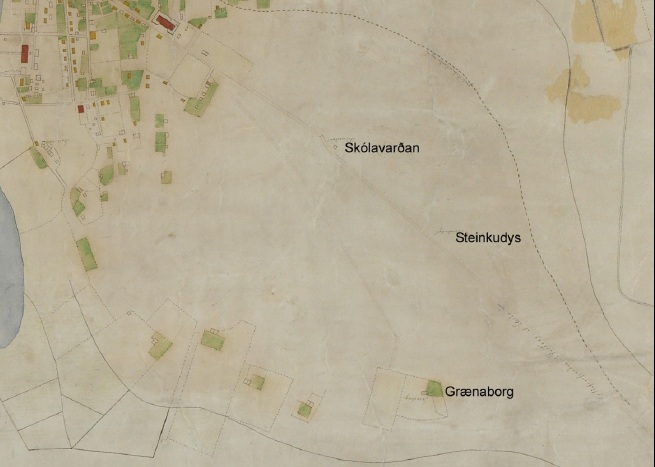

Kort Benedikts Gröndal frá árinu 1887 sýnir staðsetningu torfbæjarins Grænuborgar. Skólavörðuholtið er merkt á myndinni sem og Steinkudys, þar sem Steinunn Sveinsdóttir, sem lést í tugthúsinu í ágúst 1805, var dysjuð. Steinunn er ein aðalpersónan í Svartfugli Gunnars Gunnarssonar.
Bærinn Grænaborg var byggður árið 1834 af Gísla Gíslasyni og Sigríði Hinriksdóttur konu hans. Bærinn var sagður tómthúsbýli en lítið undirlendi eða ræktarland fylgdi honum. Í heimildum er þess þó getið að Gísli hafi náð að rækta tún í kringum bæinn, sem var að mestu urðarbalar og illræktanlegt.
Hinrik Gíslason, sonur þeirra hjóna, tók við búi af þeim. Hann lést í upphafi 20. aldar en ekkja hans bjó á Grænuborg til ársins 1918, þegar búseta þar lagðist af. Líklegt er að rústir bæjarins hafi verið nánast óhreyfðar þar til Landspítalinn var byggður á árunum 1925–1930.